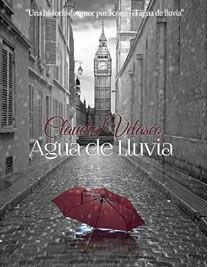

HERAZE
miraze que traer una rosa roja
en sus manos las personas
miraze a ellos y me poneiz andar
miraze que todos les regalaiz una rosa
a un ser querido que es la madre
miraiz al rededor y miraze al vendedor de rosas
que ya no tiene ni una flor roja
excepto una rosa blanca.
mirarme el señor sin ninguna rosa,
y regarme aquella rosa,
miraze al rededor con suspiro en el alma
y no encontraiz a nadie a mi rededor
miraze al cielo y mis ojos se nublaron de llanto
al ver mis ojos humedos hechase llover sobre mi,
miraze un buen rato, rodiarme mirando al cielo,
y recordando de mi ser mas querido que es la madre,
recordeiz que me dio la vida y yo nunca le di nada
cuando maz me necesiteiz mas que preocupaciones.
mirase que se me caen chorros de lagrimas,
mirase la flor de un momento, y miraiz que cambie de
color por que llore color de sangre,
como nunca lo aveiz hecho.
me levanteiz y miraiz al rededor,
hechase al andar, con direccion del cementerio,
donde me despedeiz la ultima vez que la vi,
en carne propia, y lleguez a ese lugar
me puse llorar agarrando mi rosa.
y deseiz que lo amaba y quireiz que te extraño
en ese momento en el cielo echaze la nuves
de color negro y llegar un trueno sobre la tierra,
lloraiz y agarraiz sobre mi echaze fin de la vida
junto mi ser mas querido... hechaze irme de aqui
donde mi ser mas querido que is mi madre.
